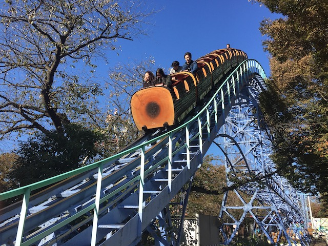
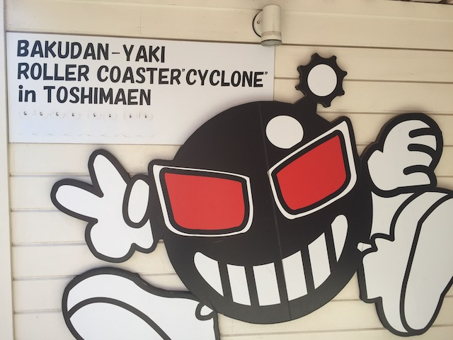
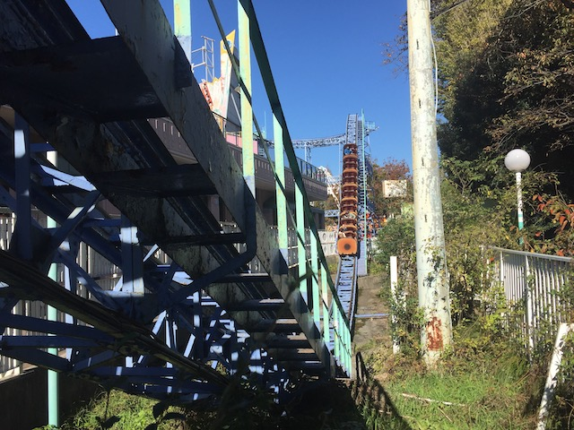
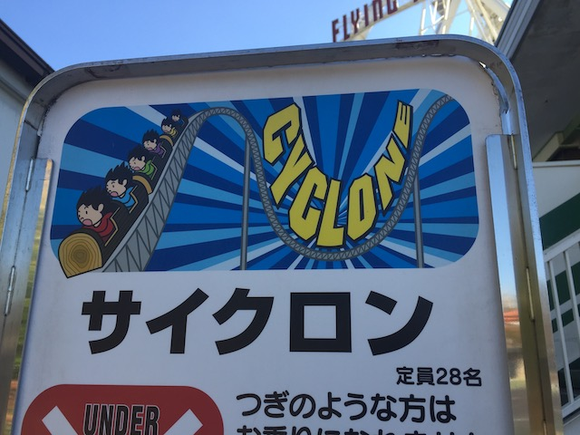

| |

Cyclone Review

For today's review, we'll be going back in time to my visit to Toshimaen to review Cyclone. The parks star attraction and the ONLY ride at the park that was unique and something special to the park. I know if you looked at this ride, it looks like nothing special whatsoever. Just a standard boring forceless family coaster. That's certainly what I was expecting up until I first rode this ride. But I rode it, and....it was surprisingly a lot of fun. SO MUCH BETTER than I was expecting it to be. Yeah. It's a fairly strange and kind of quirky ride. Right down to the cars you ride in. First of all, they're logs. You know those log trains for the Steel Mini Coaster & the Junior Coaster in RCT 1 & 2? Yep. Those exist in real life. On this coaster! Or at least they did until it got demolished. =( Also, to make this ride stranger, the seats were carpeted. I don't know why, but they were! The only restraints this thing had was some sort of seatbelt. Buckle it and away we went! We climbed up the lifthill very slowly. For those who weren't real big roller coaster riders, this built anticipation. But mostly, it sort of just dragged on. But eventually, we reached the top, though there's still a little bit of straight track with the lifthill. *Sigh* Oh Japan. Anyways, we went around a turn, creeped to the edge, and went down the first drop. It was surprisingly really good. Get some speed going. And....WHAT THE HELL WAS THIS!!? WHOA!!! THERE WAS AIRTIME RIGHT HERE!!! And not only that, but it was actually ejector air! Yeah! I'm not kidding! This ride had surprise ejector air! Yeah. I really liked this ride. We went up some small hill, through a little bit of straight track, and then dipped down to the ground. YAY!!! MORE EJECTOR AIRTIME!!! We then went up a long ramp-like incline, which killed our speed. I think it also functioned as a trim. Aww. Lame. Though at least the ride is taking us through the trees, so its a nice forested view. Also, we got a decent view of the log flume as well as the parks lazy river. But soon enough, that's over. And we head down the long ramp-like drop. And from here, it follows a simple pattern. Go through a small hill, and then dip back down again. Sadly, there's no airtime this time around. Go up another hill, go through a couple more dips before we drop into a tunnel. TAKE THE TUNNEL!!!! The tunnel also appears to be a giant turn, but because its so wide, there's not a whole lot of laterals. We then exit the tunnel and go through some more straight track. OK, we're literally just killing speed at this point. Rise up, and hit the brake run. So yeah. Cyclone was a very....strange coaster. It mainly just seemed to be a generic coaster, with a couple hills. So on paper, this looks like it should be a very dull and boring ride. But...looks can be decieving, and this ride actually maintained its speed fairly well and had a couple good moments of ejector air. I'm actually kind of sad that this ride no longer exists and got torn down because of Harry Potter (DAMN YOU JK ROWLING!!!). Well, at least this wasn't nearly as good as the other coasters murdered in the name of Harry Potter. Yeah. This ride was nothing special and far from the best coaster ever, or even the best coaster in Japan. But hey. If forced to choose between this ride or the much more popular Vanish @ Yokohama Cosmoworld, I would've taken this ride over that. Sad to see this ride go. But hey. At least I got the chance to ride it at all.
6/10
Location: Toshimaen
Opened: 1965
Died: August 31, 2020
Built by: Togo
Last Ridden: November 15, 2018
Cyclone Photos



Home
|